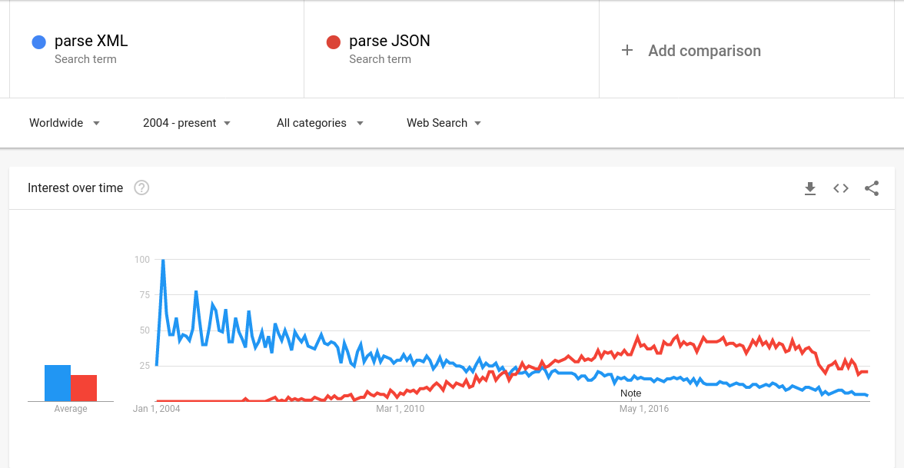

# XML vs JSON trends as of 2022
This article compares populartiy of JSON and XML with three different tools.
It was inspired by the chart from the excellent article by [Two-Bit History](https://twobithistory.org/about.html): [The Rise and Rise of JSON](https://twobithistory.org/2017/09/21/the-rise-and-rise-of-json.html).
The first chart below is an updated version that focuses on XML and JSON.
## Stack Overflow
Source
### Interpretation
The popularity of JSON on StackOverflow continued to rise until 2018 when it dipped by 2 gridpoints and remained more or less stable since.
The populartiy of XML has been more or less continuously dropping, although it also seems to have somewhat stabilized around 2018.
This begs the question: whatever hapened (on StackOverflow) in 2018?
JSON took over by the end of 2012. Perhaps this was what averted [the end of the world](https://en.wikipedia.org/wiki/2012_phenomenon)? 🤣
## Google Trends
Both embedded versions of the charts and screenshots are included. I tested 3 pairs of terms.

### Interpretation
XML continues to drop with smaller and smaller fluctuations in interest.
Meanwhile JSON, growing steadily, seems to have taken over by mid-2016 or earlier, depending on the term. Surprisingly though, although still remaining above XML, JSON dipped significantly around the last quarter of 2020 and has not recovered so far.
Again: whatever happened?
## Google Ngrams
Both embedded versions of the charts and screenshots are included. I tested the same 3 terms as in Google Trends.
### Interpretation
This data stretches over a larger timespan, although it is not as accurate as above (tinkering is encouraged). The latest data is from 2019.
It seems that when the latest version of XML was released 15 years ago, it was already well past its peak popularity which has been continuously declining since.
JSON emerged in the early 2000s and has been steadily growing to take over XML in the future (after 2019) or having taken over few years ago, depending on the term.
For the curious, I recommend trying terms spelled with different case. In particular for "xml,json" (all lowercase) JSON has taken over in 2016.
## Conclusion
Analyzing StackOverflow and Google trends it is clear that XML has been steadily declining in popularity for over a decade now. This decline may be slowing down, as XML remains irreplaceable in certain contexts.
Meanwhile JSON has been mostly growing, surpasing its predecessor. It is rightly replacing XML in all domains except text markup, and especially in data interchange. Perhaps recently though JSON have been stagnating.
Maybe time has come for [something new](https://jevko.org)?